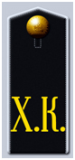

История возникновения Хабаровского кадетского корпуса тесно связана с ростом военного присутствия России на Дальнем Востоке, и в частности в Приморском крае. По мере того как в регионе увеличивалось количество проходивших там службу офицеров все острее вставал вопрос о необходимости дать их детям возможность получить достойное воспитание и образование. В этой связи приамурский генерал-губернатор А.Н. Корф в 1886 г. возбудил ходатайство об учреждении в Хабаровске кадетского корпуса на 100 воспитанников.
В 1888 г. приказом по Военному ведомству в Хабаровске была открыта Приготовительная школа Сибирского кадетского корпуса. В связи с тем, что школа не могла в полной мере решить вопрос обучения растущего количества офицеров в регионе, А.Н. Корф в 1891 г. вновь выступил с ходатайством открыть в Хабаровске кадетский корпус. Позже с такими же ходатайствами обращались к императору в 1897 г. генерал С.М. Духовской и 1898 г. генерал Н.И. Гродеков. Наконец, приказом по Военному ведомству от 30 апреля 1900 г. Хабаровская приготовительная школа Сибирского кадетского корпуса была упразднена и с 1 сентября 1900 г. учреждался Хабаровский кадетский корпус. Официальное открытие корпуса состоялось 3 сентября 1900 г. в присутствии генерал-губернатора Н.И. Гродекова.
Здание Хабаровского кадетского корпуса. Почтовая открытка. 1900-е гг.
7 октября 1905 г. корпусу было пожаловано знамя, которое было вручено 18 июля 1907 г. С 16 мая 1908 г. в связи с пятидесятилетием присоединением графом Муравьевым-Амурским Приморского и Уссурийского краев к России корпус было повелено именовать Хабаровским графа Муравьева-Амурского кадетским корпусом. 28 декабря 1908 г. был утвержден жетон кадетского корпуса.
Многие выпускники Хабаровского корпуса приняли участие в Русско-японской войне 1904-1905 гг. и в Первой мировой войне. 15 воспитанников корпуса, еще будучи кадетами, получили Георгиевские кресты и бронзовые медали.
Начало первой мировой войны вызвали в корпусе прилив патриотизма и энтузиазма. Бывали даже случаи побега на фронт, которые из-за расстояний заканчивались неудачно.

Погон кадета Хабаровского кадетского корпуса
Отречение царя и октябрьский переворот кадеты не приняли. В декабре 1917 г. многие кадеты старших классов бежали из корпуса в белые отряды. Некоторые из них сразу же оказались у атамана Семенова, многие были зачислены в артиллерию.
1 мая 1918 г. Хабаровский корпус был преобразован в гимназию Военного ведомства. В середине 1918 г. из-за сложившегося в корпусе враждебного отношения к советской власти кадеты были распущены по домам. Когда атаман Калмыков, а вслед за ним японцы заняли Хабаровск, Калмыков разрешил собрать всех кадет и возобновить занятия в корпусе. В середине 1920 г. японцы и отряды атамана Калмыкова покинули город. Вскоре город покинул и Хабаровский корпус. В октябре 1920 г. все хабаровские кадеты были собраны в казармах 35-го полка на острове Русский возле Владивостока. Во Владивостоке корпус слился с обычной школой, но когда к власти в городе пришло правительство во главе с Меркуловым, школа была вновь преобразована в кадетский корпус.
К концу октября 1922 г. в связи с наступлением Красной армии корпус стал готовиться к эвакуации. В ночь на 25 октября 1922 г. Хабаровский корпус был погружен на корабли Сибирской флотилии и навсегда покинул Россию.
На этом Хабаровский кадетский корпус прекратил свое существование.